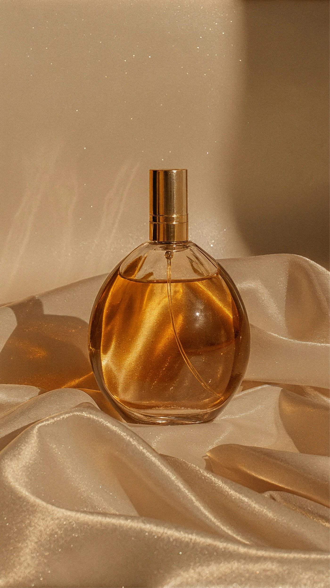

Las notas cálidas, especiadas o dulces suelen sentirse distintas en un local cerrado que al aire libre. Estas tres opciones tienen perfiles diferentes; probá una por vez y elegí la que te resulte cómoda.
Frutal, especiado y dulce
Afnan 9 PM
Combina bergamota, lavandín, canela y manzana con muguete y flor de azahar. El pachulí, el ámbar, la vainilla y el haba tonka le dan un perfil dulce con especias, para quien prefiere algo distinto de un perfume principalmente cítrico.
Especiado y amaderado
Afnan 9 PM Elixir
Abre con nuez moscada, elemí y cardamomo; en el centro mezcla pimienta de Jamaica, lavandín y cuero. El ládano, el pachulí y la vainilla le dan un cierre cálido que podés comparar con el de 9 PM.
Ámbar, tabaco y vainilla
Lattafa Asad Elixir
Mezcla pimienta rosa, azafrán y toronja con tabaco, cedro y vainilla. El pachulí, el olíbano, el cashmeran y el ámbar seco completan una composición cálida con especias y maderas.
Aplicación
Menos puede ser más en un lugar cerrado
- Probá una atomización primero y esperá unos minutos antes de añadir otra.
- Si la salida te parece demasiado dulce, dejá que el perfume se asiente antes de descartarlo.
- Para una cena o un concierto en un espacio pequeño, elegí una cantidad que no invada a quienes están cerca.
- Pedí una muestra si está disponible; la piel y el clima cambian la experiencia.
Aplicá poca cantidad en interiores y elegí el perfume que te resulte cómodo a vos.